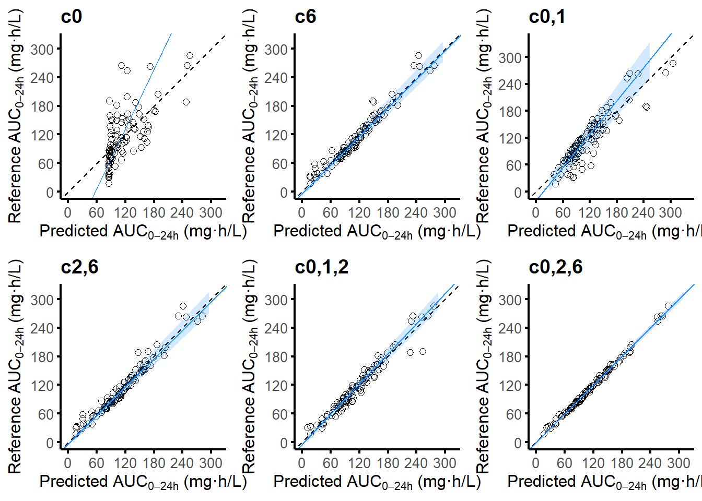

library(ggplot2)
library(readxl)
library(reshape2)
library(gridExtra)
library(mcr)Loading required package: parallelLoading required package: robslopeslibrary(openxlsx)Warning: package 'openxlsx' was built under R version 4.2.3前言：本人日常开展频繁的群体药代建模工作，因此产生了将重复的分析流程打包为自定义函数以简化日常使用的想法，遂撰写本文档。
日期：2023年6月08日
案例数据获取：
自制cheat sheet：

library(ggplot2)
library(readxl)
library(reshape2)
library(gridExtra)
library(mcr)Loading required package: parallelLoading required package: robslopeslibrary(openxlsx)Warning: package 'openxlsx' was built under R version 4.2.3下文图片全部以ggplot生成，因此先准备指定的图形主题，提升可读性。将我需要的风格设置汇总于对象sgtheme0
sgtheme0 <-
theme_minimal() +
theme(plot.title = element_text(size = 14, face = "bold"),
axis.text=element_text(size=10),
axis.title.x=element_text(size=12),
axis.title.y=element_text(size=12),
legend.text=element_text(size=10),
legend.position="none",
axis.line=element_line(colour="black", linewidth=0.8),
axis.ticks=element_line(colour="black", linewidth=0.8),
panel.grid.major = element_blank(),
panel.grid.minor = element_blank())这个函数的作用，是根据给定的数据向量，生成一组合适的数值下限、上限和步进。用于生成合适间距，合适标签的统计图形。lus是lower, upper, skip的缩写。
count_zeros函数用来计数小数前有多少个零，如x绝对值大于1，则返回0；如x=0，则返回0。
sgceil函数，sgflr函数可返回输入数字的首位有效数字的向上整数或向下整数。
sgceil2函数，sgflr2函数是一组适应小数的向上取整函数和向下取整函数。
lujudgment函数能根据阈值将上下限吸附到0。
count_zeros <- function(x) {
if (abs(x) >= 1 | x==0) {
return(0)
} else {
return(ceiling(-log10(abs(x))))
}
}
sgflr <- function(x){
if (abs(x)>=1 | x==0){
y=floor(x)
} else {
y=sgflr(x*10)
}
return(y)
}
sgceil <- function(x){
if (abs(x)>=1 | x==0){
y=ceiling(x)
} else {
y=sgceil(x*10)
}
return(y)
}
sgflr2 <- function(x){
y=sgflr(x)*10^(-count_zeros(x))
return(y)
}
sgceil2 <- function(x){
y=sgceil(x)*10^(-count_zeros(x))
return(y)
}
lujudgment <- function(lower,upper,threshold=0.66){
pneg <- abs(upper)/abs(upper-lower)
ppos <- abs(lower)/abs(upper-lower)
if (lower*upper<=0){
return(c(lower,upper))
} else {
if (sum(lower,upper)<0){
if (pneg<=threshold) {
return(c(lower,0))
} else {
return(c(lower,upper))
}
} else {
if (ppos<=threshold) {
return(c(0,upper))
} else {
return(c(lower,upper))
}
}
}
}
lus <- function(vec,intv=5){
upper0 <- sgceil2(max(vec,na.rm = T))
lower0 <- sgflr2(min(vec,na.rm = T))
upper1 <- lujudgment(lower = lower0,upper = upper0)[2]
lower1 <- lujudgment(lower = lower0,upper = upper0)[1]
skip <- signif((upper1-lower1)/intv,digits = 0)
return(c(lower=lower1,upper=upper1,skip=skip))
}本函数能够帮助批量导入文件夹目录下的所有read_excel能读取的excel文件，参数有：
list_path：该文件夹目录的有效路径，比如”./PTA/lzd_pta/“；
excel_type：该文件的后缀名的字符，如”.xlsx”或”.xls”；
import_excel <- function(list_path,excel_type) {
#library(readxl)
file_names <- list.files(path = list_path ,pattern = paste0("\\",excel_type,"$"))
file_names1 <- gsub(excel_type,"",file_names)
file_names2 <- paste0(list_path,file_names)
list_data <- list()
for (i in seq_along(file_names)) {
list_data[[file_names1[i]]] <- read_excel(file_names2[i])
}
return(list_data)
}一般最先获得的数据是id、1时浓度、2时浓度……这样的短数据格式，比如：

该数据框其实是id和时间两个维度交织成的矩阵，填充以浓度。但是分析中需要使用如下形式的长数据格式：

短数据格式里的时间变成了time0，表示采样点距离最后一次给药的时间； CC列即原来的浓度； time列是time0加上一段时间间隔，表示采样点距离第一次给药的时间；
定义了poppk_initial函数，这个函数的作用是将短数据格式的浓度-时间数据转化为长数据格式。参数有：
data：数据框（短数据格式），一列id，其余是各个protocol时间的浓度；
id：数据框id列的列名；
hours：浓度采样时间距离治疗首次给药的时间间隔，以小时为单位；
timeword：protocol时间列名中混杂的字符，如上述的”h”；
idword：id列中混杂的字符，如上述的”RFP”；
poppk_initial <- function(data,id,hours,timeword,idword){
#library(reshape2)
data <- melt(data,id=id)
colnames(data) <- c("id","time0","CC")
data$time0 <- gsub(timeword,"",data$time0)
data$time0 <- as.numeric(data$time0)
data$time <- data$time0 + hours
data$id <- gsub(idword,"",data$id)
data$id <- as.numeric(data$id)
data$id <- factor(data$id)
return(data)
}当用poppk_initial获得处理后的长数据格式数据框，即可进一步描述性作图。建立新函数poppk_profile，参数包括：
data：数据框（长数据格式）；
title_word：图表标题；
其余散点设置如字面意思所示，有默认值，可不填；
poppk_profile <- function(data,
title_word,
point_shape=1,point_size=1,point_alpha=1){
xlus <- lus(data$time0,intv = 6)
ylus <- lus(data$CC,intv = 6)
#library(ggplot2)
profi <- ggplot(data,aes(time0,CC,group=id,color=id))+
geom_line(linewidth=0.5,alpha=0.5)+
geom_point(shape=point_shape,size=point_size,alpha = point_size)+
scale_y_continuous(limits = c(ylus[1], ylus[2]),breaks = seq(ylus[1], ylus[2], ylus[3]))+
scale_x_continuous(limits = c(xlus[1], xlus[2]),breaks = seq(xlus[1], xlus[2], xlus[3]))+
sgtheme0+theme(aspect.ratio = 1/1.2)+
labs(x="Time after last dose (h)",y="Concentration (mg/L)",title = title_word)
return(profi)
}这个函数是poppk_initial的逆过程，即将数据框从长数据格式转换为短数据格式
poppk_unini <- function(data){
#library(reshape2)
data <- data[,c("id","time0","CC")]
data$time0 <- as.character(round(data$time0,0)) #保险步骤，防止存在浮点数
data$time0 <- paste0("c",data$time0)
data <- dcast(data,id~time0,value.var ="CC" )
data <- data[order(data$id),]
return(data)
}仅有浓度、时间、id的数据不足以支持协变量分析。可以使用merge：
data_conc：长数据格式的浓度-时间-id数据；
data_cov：按照id组织的协变量数据，每个id具有唯一一行；
#merge(data_conc,data_cov, by = "id", all.x = TRUE)导入工作目录下的example_conc.xlsx，转化为长数据，并匹配协变量，并描述性作图：
example_conc <- read_excel("example_conc.xlsx")
head(example_conc)# A tibble: 6 × 11
`ABR-ID` c0 c1 c2 c4 c6 c8 c10 c12 c16 c24
<chr> <dbl> <dbl> <dbl> <dbl> <dbl> <dbl> <dbl> <dbl> <dbl> <dbl>
1 ABR_1 0.416 17.7 18.2 11.8 8.91 6.15 4.63 3.25 1.62 0.402
2 ABR_2 0.0916 10.1 9.64 6.44 4.00 2.84 1.85 1.23 0.513 0.0886
3 ABR_3 2.74 17.3 16.9 14.3 12.3 10.3 9.25 7.62 5.38 2.88
4 ABR_4 0.956 9.68 10.2 8.76 6.62 5.77 4.59 3.60 2.33 0.945
5 ABR_5 0.867 9.01 10.4 8.62 6.82 5.31 4.60 3.41 2.14 0.889
6 ABR_6 1.38 11.7 12.9 10.5 8.31 6.86 6.02 4.40 3.07 1.38 #假设示例数据采集自治疗第14天，因此hours=312
example_conc <- poppk_initial(example_conc,
id = names(example_conc)[1],
hours = 312,
timeword = "c",
idword = "ABR_")
head(example_conc) id time0 CC time
1 1 0 0.41605874 312
2 2 0 0.09155238 312
3 3 0 2.74066892 312
4 4 0 0.95612331 312
5 5 0 0.86696204 312
6 6 0 1.37999804 312#接下来为长数据格式数据框匹配协变量
example_cov <- read_excel("example_cov.xlsx")
head(example_cov)# A tibble: 6 × 4
id sex age wgt
<dbl> <dbl> <dbl> <dbl>
1 1 0 42 75.5
2 2 0 45 56.5
3 3 1 42 52.3
4 4 0 46 57.9
5 5 0 36 64.4
6 6 0 45 73.8example_conc <- merge(example_conc,example_cov, by = "id", all.x = TRUE)
head(example_conc) id time0 CC time sex age wgt
1 1 0 0.4160587 312 0 42 75.5
2 1 4 11.8079822 316 0 42 75.5
3 1 12 3.2535626 324 0 42 75.5
4 1 8 6.1465662 320 0 42 75.5
5 1 16 1.6156314 328 0 42 75.5
6 1 24 0.4019182 336 0 42 75.5#测试一下将长数据格式转回短数据格式，此时协变量数据也会丢失
example_conc2 <- poppk_unini(example_conc)
head(example_conc2) id c0 c1 c10 c12 c16 c2 c24
1 1 0.41605874 17.735973 4.632888 3.253563 1.6156314 18.194528 0.40191820
2 2 0.09155238 10.074321 1.847301 1.228712 0.5134632 9.640159 0.08855422
3 3 2.74066892 17.263403 9.245598 7.615661 5.3757969 16.871231 2.87549953
4 4 0.95612331 9.675802 4.587828 3.599350 2.3344852 10.206424 0.94500674
5 5 0.86696204 9.007820 4.596061 3.414644 2.1394740 10.369615 0.88931150
6 6 1.37999804 11.724099 6.021056 4.396951 3.0718515 12.907642 1.37977694
c4 c6 c8
1 11.807982 8.906536 6.146566
2 6.440746 3.999703 2.839105
3 14.295843 12.286614 10.310782
4 8.755439 6.623871 5.767438
5 8.615051 6.819609 5.312783
6 10.480176 8.311359 6.864189#对长数据格式进行描述性作图
poppk_profile(data = example_conc,title_word = "Example")如果你和我一样比较注重图片品质和风格的统一，那么你可能也不太喜欢phoenix软件自动输出的图片。那么我们就可以使用phoenix产生的数据表，提取其中的数据，重置图片如拟合优度图，视觉预测检验图。

本章拟合优度图要用到的表格是Residuals，右键导出：

goodness_predict函数用来生成（观测浓度相关的）拟合优度图，包括观测浓度VS个体预测值图，观测浓度VS群体预测值图。参数有：
data_residual：从phoenix NLME导出的Residuals数据框；
indiv：逻辑值，如为T则绘制个体预测值图，如为F则绘制群体预测值图；
title_word：图标题
其余还有point_shape，point_size，point_alpha等带有默认值的参数，同字面意思，可不填。
goodness_predict <- function(data_residual,
indiv,
title_word,
point_shape=1,point_size=2,point_alpha=1){
xylus <- lus(vec = c(data_residual$DV,
if (indiv)
{data_residual$IPRED}
else
{data_residual$PRED}),intv = 5)
#library(ggplot2)
pgood <- ggplot(data_residual,
aes(
if (indiv)
{IPRED}
else
{PRED},DV))+
geom_point(size=point_size,alpha=point_alpha,shape=point_shape)+
geom_abline(slope = 1, intercept = 0,linewidth = 0.5)+
scale_y_continuous(limits = c(xylus[1], xylus[2]),breaks = seq(xylus[1], xylus[2], xylus[3]))+
scale_x_continuous(limits = c(xylus[1], xylus[2]),breaks = seq(xylus[1], xylus[2], xylus[3]))+
sgtheme0+theme(aspect.ratio = 1/1)+
labs(x=ifelse(indiv,
"Individual predicted concentration (mg/L)",
"Population predicted concentration (mg/L)"),
y="Observed concentration (mg/L)",
title = title_word)
return(pgood)
}goodness_cwres函数用来生成条件加权残差的散点图，参数有：
data_residual：从phoenix NLME导出的Residuals数据框；
pred：逻辑值，如为T则绘制群体预测值图，如为F则绘制末次给药时间图；
title_word：图标题
yrange：可指定的CWRES范围，默认值为2
其余还有point_shape，point_size，point_alpha等带有默认值的参数，同字面意思，可不填。
注：如需要拟合线，将代码中被注释的3行取消注释即可
goodness_cwres <- function(data_residual,
pred,
title_word,
yrange = 2,point_shape=1,point_size=2,point_alpha=1){
xlus <- lus(if (pred)
{data_residual$PRED}
else
{data_residual$TAD},intv = 5)
ylus <- lus(data_residual$CWRES,intv = 5)
#library(ggplot2)
pgood <- ggplot(data_residual,
aes(if (pred) {
PRED
} else {
TAD
},CWRES))+
geom_point(size=point_size,alpha=point_alpha,shape=point_shape)+
geom_abline(slope = 0, intercept = 0,linewidth = 1)+
geom_hline(yintercept = yrange,linetype = "dashed")+
geom_hline(yintercept = -yrange,linetype = "dashed")+
#geom_smooth(se = F,color = "blue")+
#geom_smooth(data = data_residual,aes(TAD,abs(CWRES)),se = F,color = "red")+
#geom_smooth(data = data_residual,aes(TAD,-abs(CWRES)),se = F,color = "red")+
scale_y_continuous(limits = c(ylus[1], ylus[2]),breaks = seq(ylus[1], ylus[2], ylus[3]))+
scale_x_continuous(limits = c(xlus[1], xlus[2]),breaks = seq(xlus[1], xlus[2], xlus[3]))+
sgtheme0+theme(aspect.ratio = 1/1)+
labs(x=ifelse(pred,
"Population predicted concentration (mg/L)",
"Time after last dose (h)"),
y="Conditional weighted residual",
title = title_word)
return(pgood)
}#导入数据
example_Residuals <- read_excel("example_Residuals.xlsx")
head(example_Residuals)# A tibble: 6 × 18
Scenario id IVAR TAD PRED IPRED DV IRES PREDSE Weight IWRES
<lgl> <dbl> <dbl> <dbl> <dbl> <dbl> <dbl> <dbl> <lgl> <dbl> <dbl>
1 NA 1 312 0 0.275 0.359 0.416 0.0572 NA 1 0.227
2 NA 1 313 1 13.9 17.9 17.7 -0.153 NA 1 -0.606
3 NA 1 314 2 13.8 17.5 18.2 0.654 NA 1 2.59
4 NA 1 316 4 9.96 12.7 11.8 -0.844 NA 1 -3.35
5 NA 1 318 6 6.96 8.87 8.91 0.0395 NA 1 0.157
6 NA 1 320 8 4.86 6.21 6.15 -0.0626 NA 1 -0.248
# … with 7 more variables: WRES <dbl>, CWRES <dbl>, CdfDV <dbl>, TADSeq <dbl>,
# ObsName <chr>, ResetSeq <dbl>, `Var. Inf. factor` <lgl>#作拟合优度图（与实测浓度相关）
grid.arrange(goodness_predict(example_Residuals,indiv = T, title_word = "Goodness-of-fit plot"),
goodness_predict(example_Residuals,indiv = F, title_word = "Goodness-of-fit plot"),
ncol = 2, nrow = 1)grid.arrange(goodness_cwres(example_Residuals,pred = T, title_word = "Goodness-of-fit plot"),
goodness_cwres(example_Residuals,pred = F, title_word = "Goodness-of-fit plot"),
ncol = 2, nrow = 1)导出vpc数据文件：

导出的VPC数据框需要处理成适合ggplot作图的格式，包含VPC作图需要的观测值折线、区间等。定义vpc_rebuild函数，参数有：
vpc_data：从phoenix导出储存VPC图信息的PredCheck_ObsQ_SimQCI数据框
vpc_rebuild <- function(vpc_data){
#抽取观察值的百分位数
vpc_obs <- vpc_data[!is.na(vpc_data$DV0),]
#抽取区间模拟的上限、下限和中位数
vpc_05 <- vpc_data[vpc_data$QE == "05%",]
vpc_50 <- vpc_data[vpc_data$QE == "50%",]
vpc_95 <- vpc_data[vpc_data$QE == "95%",]
#汇总
rebuilt <- data.frame(time = vpc_obs$IVAR, cc = vpc_obs$DV0, per = vpc_obs$QI,
ymin = vpc_05$DV, yy = vpc_50$DV, ymax = vpc_95$DV)
return(rebuilt)
}根据vpc_rebuild的结果，生成VPC图，参数有：
data_CI：用于生成模拟区间的数据，一般是vpc_rebuild(PredCheck_ObsQ_SimQCI)
data_obs：用于生成观测值实际百分位数的数据，一般同上
data_points：用于生成蓝色散点，是第一部分的浓度-时间数据
hours：浓度采样时间距离治疗首次给药的时间间隔，以小时为单位；
title_word：标题字符
其余还有point_shape，point_size，point_alpha等带有默认值的参数，同字面意思，可不填。
注：函数中将生成模拟区间的数据和用于生成观测值的数据分离开了，但一般情况下这两个参数使用的是同一个数据。
vpc_plot <- function(data_CI,
data_obs,
data_points,
hours,
title_word,
point_shape=1,point_size=1,point_alpha=1){
data_CI$time0 <- data_CI$time-hours
data_obs$time0 <- data_obs$time-hours
data_points$time0 <- data_points$time-hours
xlus <- lus(data_CI$time0,intv = 6)
ylus <- lus(c(data_CI$ymin,data_CI$ymax,data_points$CC),intv = 6)
#library(ggplot2)
pvpc <- ggplot()+
geom_ribbon(data = data_CI,aes(x=time0,y=yy, group=per,ymin=ymin,ymax=ymax,
fill=per),alpha=1,show.legend = F)+
scale_fill_manual(values = c("#d6ebf2","#ffe9e7","#d6ebf2"))+
geom_point(data = data_points, aes(x=time0,y=CC), color="blue",
shape=point_shape,size=point_size,alpha = point_size)+
geom_line(data = data_CI,aes(x=time0, y=yy, group=per),linewidth=0.5, color="black",linetype="dashed")+
geom_line(data = data_obs,aes(x=time0, y=cc, group=per),linewidth=0.5, color="red")+
scale_y_continuous(limits = c(ylus[1], ylus[2]),breaks = seq(ylus[1], ylus[2], ylus[3]))+
scale_x_continuous(limits = c(xlus[1], xlus[2]),breaks = seq(xlus[1], xlus[2], xlus[3]))+
sgtheme0+theme(aspect.ratio = 1/1.2)+
labs(x="Time after last dose (h)",y="Concentration (mg/L)",title = title_word)
return(pvpc)
}#导入数据
example_PredCheck_ObsQ_SimQCI <- read_excel("example_PredCheck_ObsQ_SimQCI.xlsx")
head(example_PredCheck_ObsQ_SimQCI)# A tibble: 6 × 12
Scena…¹ Strat1 Strat2 Strat3 Bin_Min IVAR Bin_Max DV0 DV ObsName QI
<lgl> <dbl> <dbl> <dbl> <dbl> <dbl> <dbl> <dbl> <dbl> <chr> <chr>
1 NA 0 0 0 312 312 312 2.96e-6 NA CObs 05%
2 NA 0 0 0 313 313 313 6.30e+0 NA CObs 05%
3 NA 0 0 0 314 314 314 6.59e+0 NA CObs 05%
4 NA 0 0 0 316 316 316 2.95e+0 NA CObs 05%
5 NA 0 0 0 318 318 318 7.89e-1 NA CObs 05%
6 NA 0 0 0 320 320 320 1.87e-1 NA CObs 05%
# … with 1 more variable: QE <chr>, and abbreviated variable name ¹Scenario#处理数据集
example_vpc <- vpc_rebuild(example_PredCheck_ObsQ_SimQCI)
head(example_vpc) time cc per ymin yy ymax
1 312 2.959701e-06 05% -0.40166984 -0.2934505 -0.1749781
2 313 6.296698e+00 05% 6.43619020 7.5044485 8.5181934
3 314 6.589980e+00 05% 6.12678906 7.2959881 8.2809839
4 316 2.952892e+00 05% 2.39137176 3.6676613 4.8162193
5 318 7.887191e-01 05% 0.54188615 1.2602723 2.1432957
6 320 1.866370e-01 05% 0.01269934 0.4117271 0.8459447#VPC作图
vpc_plot(example_vpc,example_vpc,example_conc,hours = 312,title_word = "Visual predictive check")我们希望从模型中导出一些参数来表征受试者的药物暴露，这些参数通常是AUC，Cmax，Cmin，T>MIC，这需要使用phoenix的自定义报表导出。首先，将目标模型切换到代码编辑模式，添加一行内容为：deriv(AUC=C)

然后将迭代次数设置为0，添加table：

如果导出预测浓度的表格，则按如下设置：（基于浓度生成的参数的准确性取决于你导出的时间间隔，如果间隔过大则必然导致参数不准确）

首先我们需要将从phoenix导出的自定义报表中提取出AUC，默认按该组id升序排列，参数为data：报表Table01
注：AUC其实未必需要通过添加deriv(AUC=C)语句后导出，你可以根据导出的C（时间间隔为0.1），用累积条形法代替积分获得AUC，这两种方法得出的AUC具有高度一致性（如果你接受这点误差的话）。
pk_auc <- function(data){
#library(reshape2)
data <- data[,c("id","time","AUC")]
data$time <- as.character(round(data$time,0)) #保险步骤，防止生成浮点数
data <- dcast(data,id~time,value.var = "AUC")
AUC <- abs(data[,2]-data[,3])
return(AUC)
}本函数可以输出你导出时间区间内的个体浓度的最大值或最小值。
pk_cmax <- function(data){
#library(reshape2)
data <- data[,c("id","time","C")]
data <- dcast(data,id~time,value.var = "C")
Cmax <- apply(data[,-1],1,max)
return(Cmax)
}
pk_cmin <- function(data){
#library(reshape2)
data <- data[,c("id","time","C")]
data <- dcast(data,id~time,value.var = "C")
Cmin <- apply(data[,-1],1,min)
return(Cmin)
}本函数可以输出受试者的浓度大于MIC水平的维持时间，适用于一些对作用时间敏感的药物。参数有：
data：由phoenix导出的浓度报表Table01
mic：特定药物的MIC水平
skip：输出浓度的时间间隔，示例中用的是0.1，改参数决定了精度。
pk_tmic <- function(data,mic,skip){
tmic <- as.vector(table(data[data$C>mic,]$id))*skip
return(tmic)
}#生成AUC
examp_AUC_Table01 <- read_excel("examp_AUC_Table01.xlsx")
head(pk_auc(examp_AUC_Table01))[1] 129.69401 62.68937 204.47272 106.37991 103.07061 132.73341#生成Cmax
examp_C_Table01 <- read_excel("examp_C_Table01.xlsx")
head(pk_cmax(examp_C_Table01))[1] 18.39985 10.28223 17.37245 10.35271 10.18470 12.68298#生成Cmin
head(pk_cmin(examp_C_Table01))[1] 0.35888052 0.08693706 2.82047932 1.00029567 0.89331183 1.30868389#生成T>MIC
head(pk_tmic(examp_C_Table01,mic = 2,skip = 0.1))[1] 14.3 9.4 24.1 17.5 16.8 19.9假设我们已经确定了要检测哪些有限采样策略方案：
lss_list <- list(
c(0),
c(6),
c(0,1),
c(2,6),
c(0,1,2),
c(0,2,6)
)lss_multi函数用来根据上述lss_list里的各种方案形成AUC数据集，以方便进一步计算误差系数，参数有：
data_table：导出的Table01报表；
data_conc：储存浓度-时间数据的表；
lss_list：需要测试的优先采样策略方案；
lss_multi <- function(data_table,
data_conc,
lss_list){
data_merge <- poppk_unini(data_conc)
data_merge$AUCfull <- pk_auc(data_table)
data_result <- data.frame(AUCfull=data_merge$AUCfull)
for (vec0 in lss_list){
vec <- paste0("c",vec0)
data_sub <- data_merge[,c("AUCfull",vec)]
model <- lm(AUCfull ~., data = data_sub)
data_lss <- data.frame(predict.lm(model))
colnames(data_lss) <- paste0("AUC",paste(vec0,collapse = "_"))
data_result <- cbind(data_result,data_lss)
#print(paste0(paste(vec,collapse = "_"),"done"))
}
return(data_result)
}lss_formula函数和lss_multi函数具有相同的输入参数，但本函数的目的是作为一个数据框输出一系列线性回归的公式。
lss_formula <- function(data_table,
data_conc,
lss_list){
data_merge <- poppk_unini(data_conc)
data_merge$AUCfull <- pk_auc(data_table)
data_result <- data.frame()
for (vec0 in lss_list){
vec <- paste0("c",vec0)
data_sub <- data_merge[,c("AUCfull",vec)]
model <- lm(AUCfull ~., data = data_sub)
model_coef <- data.frame(coef(model))
model_coef$x <- rownames(model_coef)
model_coef$x[1] <- ""
model_coef$coef2 <- sprintf("%.1f", round(model_coef$coef.model.,1))
model_coef$kx <- paste(model_coef$coef2,model_coef$x,sep = "×")
formula <- paste(model_coef$kx,collapse = "+")
formula <-gsub("×\\+", "+", formula)
formula <-gsub("\\+-", "-", formula)
formula <-gsub("c", "C", formula)
formula <-paste0("AUC0-24h=",formula)
data_delta <- data.frame(strtg=paste(vec0,collapse = ","),fml=formula)
data_result <- rbind(data_result,data_delta)
#print(paste0(paste(vec,collapse = "_"),"done"))
}
return(data_result)
}MRR函数用来生成MPE, RMSE, R2三个指标，取其首字母而成，考虑了一下，还是不予省略小数了。参数有：
fullauc：参考AUC；
lssauc：要检测的有限采样策略AUC；
MRR <- function(fullauc,lssauc){
mae <- abs(fullauc-lssauc)/fullauc
mse <- (fullauc-lssauc)^2
MPE <- sum(mae)/length(fullauc)*100
RMSE <- sqrt(sum(mse)/(length(fullauc)-1))/mean(fullauc)*100
R2 <- cor(fullauc,lssauc)^2
#MPE <- round(MPE,1)
#RMSE <- round(RMSE,1)
#R2 <- round(R2,3)
return(c(MPE=MPE,RMSE=RMSE,R2=R2))
}lss_accuracy用来生成前述定义的lss_list里的各种采样方案的MPE, RMSE, R2，并输出为数据框，其参数有：
data_AUC：lss_multi函数生成的AUC数据集；
lss_accuracy <- function(data_AUC){
data_result <- data.frame()
names<- names(data_AUC)
names<- names[-which(names == "AUCfull")]
for (name in names){
data_delta <- data.frame(t(
MRR(fullauc = data_AUC[["AUCfull"]],
lssauc = data_AUC[[name]])))
data_delta$strtg <- gsub("_",",",gsub("AUC","",name))
data_result <- rbind(data_result,data_delta)
#print(paste0(name,"done"))
}
data_result <-data_result[,c(4,1,2,3)]
return(data_result)
}BAP函数用来生成Bland-Altman Plot，取其首字母作为函数名，其参数有：
BAP <- function(fullauc,
lssauc,
title_word,
point_shape=1,point_size=2,point_alpha=1){
BA <- data.frame(fullauc,lssauc)
BA$diff <- BA$fullauc - BA$lssauc
mean_diff <- mean(BA$diff)
lower_diff <- mean_diff - 1.96*sd(BA$diff)
upper_diff <- mean_diff + 1.96*sd(BA$diff)
xlus <- lus(BA$fullauc)
ylus <- lus(c(BA$diff,lower_diff,upper_diff))
#library(ggplot2)
bap <- ggplot(BA, aes(x = fullauc, y = diff))+
geom_point(shape=point_shape,size=point_size,alpha = point_size)+
geom_hline(yintercept = mean_diff, linewidth = 0.5)+
geom_hline(yintercept = lower_diff, color = "red", linetype="dashed", linewidth=0.5)+
geom_hline(yintercept = upper_diff, color = "red", linetype="dashed", linewidth=0.5)+
scale_y_continuous(limits = c(ylus[1], ylus[2]),breaks = seq(ylus[1], ylus[2], ylus[3]))+
scale_x_continuous(limits = c(xlus[1], xlus[2]),breaks = seq(xlus[1], xlus[2], xlus[3]))+
sgtheme0+theme(aspect.ratio = 1/1.2)+
labs(x=expression(paste("Reference ",AUC[paste(0-24,h)]," (mg·h/L)")),
y="Difference (mg·h/L)",
title = title_word)
return(bap)
}PBR函数用来生成Passing Bablok regression图，取其首字母作为函数名，其参数有：
PBR <- function(fullauc,
lssauc,
title_word,
point_shape=1,point_size=2,point){
#library(mcr)
#library(ggplot2)
value <- mcreg(lssauc, fullauc, method.reg = "PaBa")
intercept_est <- value@para[1]
intercept_lci <- value@para[5]
intercept_uci <- value@para[7]
gradient_est <- value@para[2]
gradient_lci <- value@para[6]
gradient_uci <- value@para[8]
xylus <- lus(c(lssauc,fullauc))
xylus[2] <-xylus[2]*1.1
data <- data.frame(lssauc, fullauc)
data_CI <- data.frame(x=seq(xylus[1],xylus[2],xylus[3]/50))
data_CI$ymin <- gradient_lci * data_CI$x + intercept_lci
data_CI$ymax <- gradient_uci * data_CI$x + intercept_uci
data_CI$y <- (data_CI$ymin+data_CI$ymax)/2
pbr <- ggplot(data = data, aes(x=lssauc,y=fullauc))+
geom_point(shape=point_shape,size=point_size,alpha = point_size)+
geom_abline(slope = 1, intercept = 0,linewidth = 0.5,linetype = "dashed")+
geom_abline(slope = gradient_est, intercept = intercept_est,linewidth = 0.5,color = "dodgerblue")+
geom_ribbon(data = data_CI,aes(x=x,y=y, ymin=ymin, ymax=ymax),alpha=0.2,fill = "dodgerblue",show.legend = F)+
scale_y_continuous(limits = c(xylus[1], xylus[2]),breaks = seq(xylus[1], xylus[2], xylus[3]))+
scale_x_continuous(limits = c(xylus[1], xylus[2]),breaks = seq(xylus[1], xylus[2], xylus[3]))+
sgtheme0+theme(aspect.ratio = 1/1)+
labs(x=expression(paste("Predicted ",AUC[paste(0-24,h)]," (mg·h/L)")),
y=expression(paste("Reference ",AUC[paste(0-24,h)]," (mg·h/L)")),
title = title_word)
return(pbr)
}#生成有限采样策略的AUC数据集
AUC_multi <- lss_multi(data_table = examp_AUC_Table01,data_conc = example_conc,lss_list = lss_list)
head(AUC_multi) AUCfull AUC0 AUC6 AUC0_1 AUC2_6 AUC0_1_2 AUC0_2_6
1 129.69401 101.14348 140.32629 112.18081 141.44894 129.83034 132.94990
2 62.68937 88.97039 71.17959 60.30848 70.13304 63.68066 63.28098
3 204.47272 188.34574 187.95806 206.90629 185.42132 194.69835 200.49918
4 106.37991 121.40273 108.15915 94.42473 105.40975 100.00361 102.64458
5 103.07061 118.05805 110.91747 87.36000 108.12744 101.83126 103.07409
6 132.73341 137.30339 131.93910 122.37255 129.76380 133.18699 131.71217#生成多重线性回归法的公式
formula_multi <- lss_formula(data_table = examp_AUC_Table01,data_conc = example_conc,lss_list = lss_list)
head(formula_multi) strtg fml
1 0 AUC0-24h=85.5+37.5×C0
2 6 AUC0-24h=14.8+14.1×C6
3 0,1 AUC0-24h=6.1+41.8×C0+5.0×C1
4 2,6 AUC0-24h=10.1+0.7×C2+13.3×C6
5 0,1,2 AUC0-24h=4.7+33.0×C0-4.6×C1+10.6×C2
6 0,2,6 AUC0-24h=2.6+18.4×C0+2.6×C2+8.4×C6#生成有限采样策略的准确性评价结果
result_multi <- lss_accuracy(AUC_multi)
head(result_multi) strtg MPE RMSE R2
1 0 35.815448 35.916080 0.4434036
2 6 9.917029 10.899053 0.9487445
3 0,1 21.811488 20.366489 0.8210240
4 2,6 9.540385 10.486791 0.9525487
5 0,1,2 9.340905 11.022712 0.9475749
6 0,2,6 3.244003 3.311845 0.9952674#首先生成AUC数据集的列名，为接下来作图做铺垫
auc_colnames <- c()
for (lss in lss_list){
auc_colnames <- c(auc_colnames,paste0("AUC",paste(lss,collapse = "_")))
}
print(auc_colnames)[1] "AUC0" "AUC6" "AUC0_1" "AUC2_6" "AUC0_1_2" "AUC0_2_6"#生成Bland-Altman plot
plot_result <- list()
i=1
for (auc_colname in auc_colnames){
plot_delta <- BAP(fullauc = AUC_multi[["AUCfull"]],
lssauc = AUC_multi[[auc_colname]],
title_word = gsub("_",",",gsub("AUC","c",auc_colname)))
plot_result[[i]] <- plot_delta
i=i+1
}
grid.arrange(plot_result[[1]],
plot_result[[2]],
plot_result[[3]],
plot_result[[4]],
plot_result[[5]],
plot_result[[6]],
ncol = 3, nrow = 2)#生成Passing Bablok regression图
plot_result <- list()
i=1
for (auc_colname in auc_colnames){
plot_delta <- PBR(fullauc = AUC_multi[["AUCfull"]],
lssauc = AUC_multi[[auc_colname]],
title_word = gsub("_",",",gsub("AUC","c",auc_colname)))
plot_result[[i]] <- plot_delta
i=i+1
}
grid.arrange(plot_result[[1]],
plot_result[[2]],
plot_result[[3]],
plot_result[[4]],
plot_result[[5]],
plot_result[[6]],
ncol = 3, nrow = 2)Warning in max(ids, na.rm = TRUE): no non-missing arguments to max; returning
-Inf
使用贝叶斯法，先从Phoenix中使用simulation方法生成n倍的虚拟人群，但是这个基于源人群n倍的虚拟人群并未匹配协变量，故而建立本函数简化过程。参数有：
data_virtual：从Phoenix中使用simulation方法生成n倍的虚拟人群；
data_conc：长数据格式的浓度-时间-id数据（且拥有匹配的协变量）；
hours：采样点距离首次给药的时间（小时）；
cov_list：需要匹配进data_virtual的协变量名，毕竟不是所有的协变量都被纳入了模型中，只需要模型运行所依赖的几个协变量即可。注意将id列的列名放在第一个；
cov_time：在data_conc拥有很多时间截面的协变量，尽管这些协变量大概率不随时间发生变化，然而还是应该指定将哪个时间截面的协变量用作data_virtual的匹配，默认值=0；
virtual_cov <- function(data_virtual,
data_conc,
hours,
cov_list,
cov_time = 0){
cov <- data_conc
cov <- cov[cov$time0==cov_time,]
cov <- cov[,which(colnames(cov) %in% cov_list)]
data_virtual <- merge(data_virtual,cov, by = cov_list[1], all.x = TRUE)
colnames(data_virtual)[which(colnames(data_virtual) == "C")] <- "CC"
data_virtual$time0 <- data_virtual$time - hours
data_virtual$id2 <- data_virtual$id + data_virtual$repl*max(data_virtual$id)
data_virtual <- data_virtual[order(data_virtual$id2,data_virtual$time0),]
return(data_virtual)
}上一个virtual_cov函数即是虚拟人群的全浓度（full），本virtual_seg函数（segmentation，分割）的用处是将匹配有协变量的浓度时间数据（长数据），依照指定的有限采样策略（lss_list）分隔为多个子集，并以此策略命名，统一保存于.xlsx文件的多个sheet中。参数有：
data_virtual：已经匹配协变量的虚拟人群全浓度数据；
lss_list：储存有限采样策略的列表；
drug：用以区分这个药物的命名，字符型；
file_path：要保存.xlsx的目标路径，比如”./virtual_for_bayes/LZDinput_test.xlsx”
virtual_seg <- function(data_virtual,
lss_list,
drug,
file_path){
vpeople <- list()
vpeople[[paste0(drug,"full")]] <- data_virtual
for (vec0 in lss_list){
vec <- paste0(drug,paste(vec0,collapse = "_"))
vpeople[[vec]] <- data_virtual[data_virtual$time0 %in% vec0,]
#print(paste0(vec," has been done."))
}
#library(openxlsx)
wb_vp <- createWorkbook()
for (vperson in names(vpeople)){
addWorksheet(wb_vp, vperson)
}
i=1
for (vperson in vpeople){
writeData(wb_vp, names(vpeople)[i], vperson)
i=i+1
}
saveWorkbook(wb_vp, file = file_path, overwrite = TRUE)
}这一步比较简单，是虚拟人群准备的最后一步，示例：
#dosing <- data.frame(id=1:1044,Aa=600,Time = 0, ADDL = 13)
#write.csv(x = dosing,file = "./virtual_for_bayes/dosing.csv")将virtual_seg生成的.xls导入phoenix运算，逐一生成AUC table01文件，保存在output文件夹，统一命名：“cfull”, “c0”, “c0,6”, “c0,1,2” （注意：是.xls，并非.xlsx）

使用lss_bayes函数将其整理为AUC数据集，形同lss_multi函数的输出，都可输入lss_accuracy获得最终的accuracy表。参数有：
lss_bayes <- function(file_path,
lss_list){
#保持lss_list顺序，因此不用list.file读取，而是生成
files <- c("cfull")
for (i in seq_along(lss_list)){
files[i+1] <- paste0("c",paste(lss_list[[i]], collapse = ","))
}
files2 <- paste0(file_path,files,".xls")
bayes <- list()
for (i in seq_along(files)) {
bayes[[files[i]]] <- read_excel(files2[i])
}
#将所有数据框的"id2"改为"id"
for (i in seq_along(bayes)) {
names(bayes[[i]])[which(colnames(bayes[[i]]) == "id2")] <- "id"
}
#整合数据
bayes_auc <- data.frame(pk_auc(bayes[[1]]))
colnames(bayes_auc) <- paste0("AUC",gsub(",","_",gsub("c","",files[1])))
for (i in 2:length(files)){
data_delta <- data.frame(pk_auc(bayes[[i]]))
colnames(data_delta) <- paste0("AUC",gsub(",","_",gsub("c","",files[i])))
bayes_auc <- cbind(bayes_auc,data_delta)
}
return(bayes_auc)
}#导入数据，example_virtual就是已经匹配好协变量的千人模拟队列，每个模拟个体拥有0,1,2,6总共4个浓度点
example_virtual <- read_excel("example_virtual.xlsx")
head(example_virtual)# A tibble: 6 × 5
id time0 time CC wgt
<dbl> <dbl> <dbl> <dbl> <dbl>
1 1 0 312 0.361 59
2 1 1 313 18.5 59
3 1 2 314 18.3 59
4 1 6 318 9.26 59
5 2 0 312 0.118 52
6 2 1 313 13.2 52#将全浓度的example_virtual保存为采样策略分割后的excel input表
virtual_seg(data_virtual = example_virtual,lss_list = lss_list,drug = "ABR",file_path = "./example_input.xlsx")
#接下来，假设我们已经在phoenix中将所有的采样策略都跑了一遍，并导出了table01且将之重命名为相应的采样策略名字，比如“cfull”，“c6”，“c2,6”等，这些文件均保存于example_output文件夹。则我们可以使用lss_bayes函数生成贝叶斯法的AUC数据集。
#其余计算精确性指标、生成Bland-Altman plot和Passing Bablok regression等分析同上
AUC_bayes <- lss_bayes(file_path = "./example_output/",lss_list = lss_list)
head(AUC_bayes) AUCfull AUC0 AUC6 AUC0_1 AUC2_6 AUC0_1_2 AUC0_2_6
1 134.84359 100.89355 136.80140 110.27362 135.05396 132.16729 134.78456
2 84.46504 101.89481 88.38466 88.62001 85.06766 91.17698 84.96190
3 141.93625 127.74318 136.34264 136.43547 138.26872 137.43971 140.20140
4 101.15703 97.40185 99.36108 88.58934 100.10411 91.98032 99.51877
5 91.69671 85.57300 92.09627 76.79159 91.29456 82.95466 90.60621
6 96.98729 87.30675 94.16935 85.96593 94.99079 88.18161 95.05793注意：在用Phoenix生成模拟剂量的AUC时，除了要改dosing界面的剂量，还要改input tab里ADDL的剂量。（本次达标水平分析默认以AUC/MIC开展）
pta_calculator函数用来根据给定的AUC向量、MIC向量和阈值生成达标率向量，参数有：
AUC：一个AUC数值向量
MICs：本次分析模拟的MIC水平
threshold：本次分析设定的阈值
pta_calculator <- function(AUC,MICs,threshold){
result <- seq_along(MICs)
for (i in seq_along(MICs)){
result[i] <- sum(AUC/MICs[i] >= threshold)/length(AUC)*100
}
names(result) <- paste0("m",as.character(MICs))
return(result)
}pta_table函数将基于一个填装不同用药方案的AUC向量的list（且带有方案名字），生成其在不同MIC水平下的达标率。参数有：
pta_list：含有许多模拟剂量导出结果的list
MICs：本次分析模拟的MIC水平
threshold：本次分析设定的阈值
pta_table <- function(pta_list,MICs,threshold){
result <- data.frame()
for (i in seq_along(pta_list)){
data_delta <- t(data.frame(pta_calculator(pta_list[[i]],MICs,threshold)))
rownames(data_delta) <- names(pta_list)[i]
result <- rbind(result,data_delta)
}
return(result)
}pta_plot函数可将经由pta_table处理的数据框生成PTA折线图，参数有：
data：pta_table处理过的数据；
regimen_order：图例中展示模拟剂量的顺序
regimen_label：图例中展示模拟剂量的标签
title_word：图标题
pta_plot <- function(data,
regimen_order,
regimen_label,
title_word,
legend_position = c(0,0),
legend_justification = c(0,0)){
#library(reshape2)
#library(ggplot2)
data$regimen <- rownames(data)
data <- melt(data,id="regimen")
colnames(data) <- c("regimen","mic","pta" )
data$mic <- gsub("m","",data$mic)
data$mic <- factor(data$mic)
ylus <- lus(data$pta)
ppta <- ggplot(data,aes(mic,pta,group=regimen,color=regimen))+
geom_point(size=2)+
geom_line(linewidth=1,alpha=0.9)+
geom_hline(aes(yintercept=90),color="#990000",linetype="dashed")+
scale_y_continuous(limits = c(ylus[1], ylus[2]),breaks = seq(ylus[1], ylus[2], ylus[3]))+
sgtheme0+theme(aspect.ratio = 1/1.2,
legend.position = legend_position,
legend.justification = legend_justification)+
labs(x="MIC(mg/L)",
y="Probability of target attainment(%)",
title = title_word,
color = "Regimens")+
scale_color_discrete(limits = regimen_order,labels = regimen_label)
return(ppta)
}#假设我们已获得PTA结果的table01表，将其根据相应的模拟剂量重命名为"ABR_600.xls", "ABR_1200.xls", "ABR_1800.xls", "ABR_2400.xls"，并保存于example_pta目录下。
#导入数据
pta_ABR <- import_excel(list_path = "./example_pta/",excel_type = ".xls")
#令id唯一
for (i in seq_along(pta_ABR)){
pta_ABR[[i]]$id <- pta_ABR[[i]]$id + max(pta_ABR[[i]]$id)*pta_ABR[[i]]$repl
}
#将列表里的数据框替换为相应的AUC向量
for (i in seq_along(pta_ABR)){
pta_ABR[[i]] <- pk_auc(pta_ABR[[i]])
}#假设我们想要模拟的MIC为0.03,0.06,0.125,0.25,0.5,1,2。
#假设我们设定阈值为150
result_pta <- pta_table(pta_ABR,c(0.03,0.06,0.125,0.25,0.5,1,2),150)
head(result_pta) m0.03 m0.06 m0.125 m0.25 m0.5 m1 m2
ABR_1200 100 100 100.0 99.9 97.3 72.5 21.6
ABR_1800 100 100 100.0 100.0 99.7 92.6 49.1
ABR_2400 100 100 100.0 100.0 99.9 97.3 72.5
ABR_600 100 100 99.9 97.3 72.5 21.6 1.9#PTA作图
pta_plot(data=result_pta,
regimen_order = c("ABR_600", "ABR_1200", "ABR_1800", "ABR_2400"),
regimen_label = c("600mg QD", "1200mg QD", "1800mg QD", "2400mg QD"),
title_word = "Probability of target attainment")